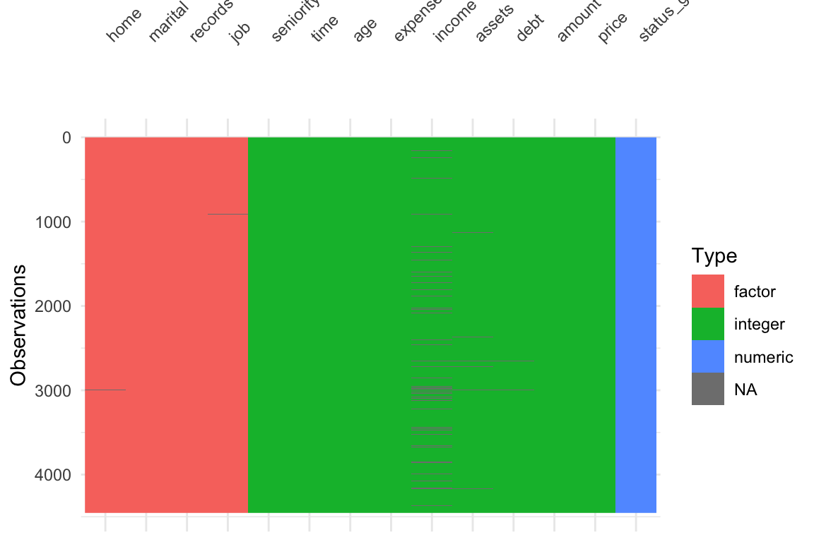
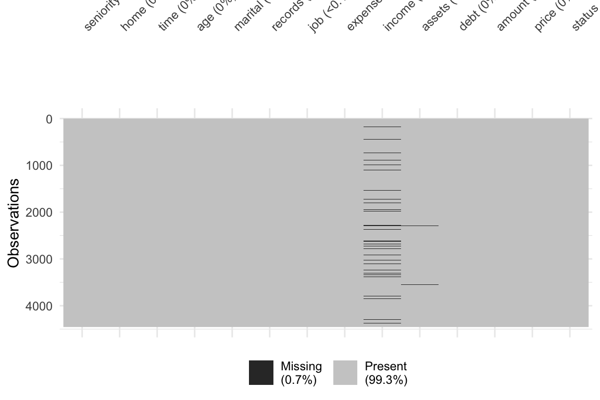
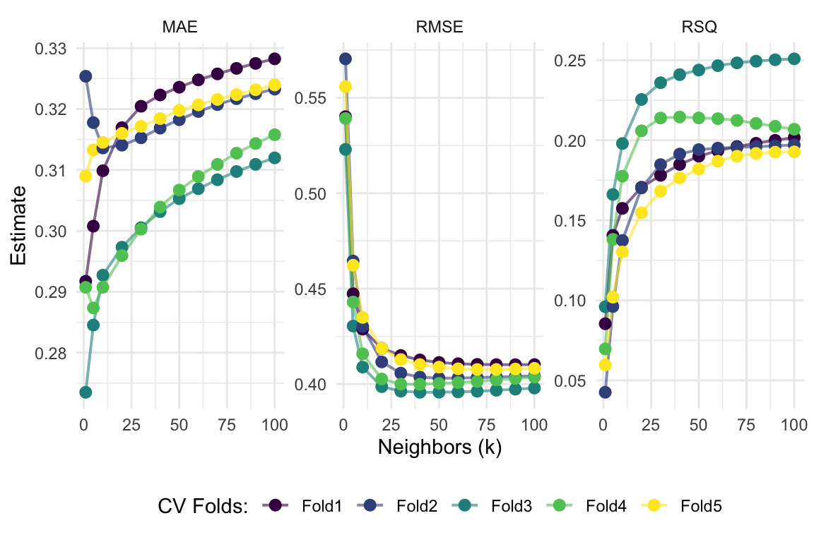

i Loaded credit data, cleaned it up and created our outcome variable
# Setup # Load packageslibrary(pacman)p_load(tidyverse, modeldata, skimr, janitor, tidymodels, magrittr, visdat)# Load the credit datasetdata(credit_data)# (Optional) Assign a new namecredit_df <- credit_data# 'Fix' namescredit_df %<>%clean_names() %>%# Create a dummy variable for 'good' credit statusmutate(status_good =1* (status =="good")) %>%# Drop the old status variableselect(-status)
Preprocessing
ii Visualized the data and found there is missing data
New way: visdat::vis_dat() and visdat::vis_miss()
# Can use skimr::skim() or a new way to visualize iscredit_df %>% visdat::vis_dat()

credit_df %>% visdat::vis_miss()

Preprocessing
iii Set up a recipe() that helped us clean the data and impute necessary missing data
Note: I am storing the preprocessing steps in an object, that I can call on later
# Define the recipe: status_good predicted by all other variables in credit_dfrecipe_all =recipe(status_good ~ ., data = credit_df)# Putting it all togetherpreprocessing_steps <- recipe_all %>%# Mean imputation for numeric predictorsstep_impute_mean(all_predictors() &all_numeric()) %>%# KNN imputation for categorical predictorsstep_impute_knn(all_predictors() &all_nominal(), neighbors =5) %>%# Create dummies for categorical variablesstep_dummy(all_predictors() &all_nominal()) %>%# Interactionsstep_interact(~income:starts_with("home"))
Preprocessing
iv Recall that creating a recipe() with steps are only instructions, we still need to prep() and juice() it to get a dataframe
Linear Regression Model Specification (regression)
Computational engine: lm
Model fit template:
stats::lm(formula = missing_arg(), data = missing_arg(), weights = missing_arg())
Fitting (Training) Your Model
After defining the type of model and the engine, we can now begin to fit() the model
We can also use this information and use predict() as we have before.
Changing The Type of Model
Okay, so we have just gone through a complex way to run a simple regression model that you likely knew how to do in a simpler way
But the power of tidymodels is coming from its flexibility.
It is very easy to change any of our decisions along the way
Let’s say instead we wanted to fit a KNN model. We just need to change the type of model and engine.
Note Some methods like KNN can be used for either "regression" tasks and "classification" tasks. We want to se the mode for these methods, either within the nearest_neighbor() function (nearest_neighbor(mode = "regression)) or using the set_mode() function.
We can finally choose a value for our parameters (tuning and CV later). In KNN that is just setting a value of \(k\). I’ll arbitrarily choose 6.
We have omitted a big part of the ML Process: Tuning and Validating models.
As always, we begin with the setup (mostly in case this is not the same week as the other parts)
# Packageslibrary(pacman)p_load(tidyverse, modeldata, skimr, janitor, tidymodels, magrittr)# Load credit datadata(credit_data)credit_df <- credit_data# Clean up namescredit_df %<>%clean_names()# Create a dummy variable for our outcome (good credit status)credit_df %<>%mutate(status_good =1* (status =="good")) %>%# drop old status variableselect(-status)
Simple Sample Splitting
First simple task: Split the full credit_df dataset into a training (sub)set and a testing (sub)set
To split the sample, lets use the initial_split() function from the rsample package.
It splits a proportion (prop argument) of your data into a training subset and leaves the rest for the testing subset.
If you wanted to sample by strata you could as well
It is another tool for you to use (we had used sample_frac() previously)
The output is an rsplit object, not a dataframe
We will pass the object given by initial_split() to the training() and testing() functions to get the actual subsets as dataframes
[Note: It can be helpful to set a seed before you split the data for reproducing results]
Simple Sample Splitting
# Set the seedset.seed(123)# Create the split (80-20 split)credit_split <- credit_df %>%initial_split(prop =0.8)# Check the outputcredit_split
<Training/Testing/Total>
<3563/891/4454>
Now we can impose the split by using the training() and testing() functions.
Simple Sample Splitting
After we grab the proper split data, we can check the dimensions to make sure it makes sense
# Grab the training data (Larger Chunk)credit_train <- credit_split %>%training()# Grab the testing data (Smaller Chunk)credit_test <- credit_split %>%testing()# Check dimensionsdim(credit_df); dim(credit_train); dim(credit_test)
[1] 4454 14
[1] 3563 14
[1] 891 14
Resampling
As you’ve seen in class, the goal of prediction exercises is good out-of-sample performance
To avoid overfitting, while still allowing for “optimal” flexibility, we use resampling methods.
We will use the vfold_cv() function to set up 5-fold cross validation for our model
vfold_cv() takes the following arguments:
data
v, the number of folds
repeats the number of times you want to repeat the cross validation (default is 1)
strata is an optional variable to use for stratified sampling in the folds
Creating the folds looks like:
# set seedset.seed(123)# 5-fold CV on the training datasetcredit_cv <- credit_train %>%vfold_cv(v =5)# Check the output credit_cv %>%tidy()
For each split, we want to process the data (recipes) and fit the model (parsnip)
Important! We want to preprocess the training subset in each split separately from the split’s subset. This helps us avoid data leakage.
In everything we have done before, we impute using the entire data. We are supposed to be keeping them totally separate.
What we really want is to process the datasets independently, but using the same recipe and steps
Define the Recipe
Only the recipe, no prep(), juice(), or bake()
# Data-processing recipe# IMPORTANT! NOTICE I AM USING THE TRAINING DATA HERE NOT THE FULL SAMPLEcredit_recipe <-recipe(status_good ~ ., data = credit_train) %>%# Mean imputation for numeric predictorsstep_impute_mean(all_predictors() &all_numeric()) %>%# KNN imputation for categorical predictorsstep_impute_knn(all_predictors() &all_nominal(), neighbors =5) %>%# Create dummies for categorical variablesstep_dummy(all_predictors() &all_nominal()) %>%# Interactionsstep_interact(~income:starts_with("home"))# Check the resultcredit_recipe
The workflow we just wrote defines the model, the data processing, and the engine.
2. Fit a Single Model With CV
If you want to estimate your model’s out-of-sample performance, then you can use fit_resamples() And we can use collect_metrics() function to assess the performance across the resamples
By default, it will average across the folds (notice it says n = 5, which is our folds).
# A tibble: 2 × 6
.metric .estimator mean n std_err .config
<chr> <chr> <dbl> <int> <dbl> <chr>
1 rmse standard 0.390 5 0.00428 pre0_mod0_post0
2 rsq standard 0.255 5 0.0163 pre0_mod0_post0
Putting it Together in a Workflow
The workflow we just wrote defines the model, the data processing, and the engine.
2. Fit a Single Model With CV
If you wanted to see how the model performs on each fold then you can set summarize = F inside collect_metrics()
fit_lm_cv %>%collect_metrics(summarize = F)
# A tibble: 10 × 5
id .metric .estimator .estimate .config
<chr> <chr> <chr> <dbl> <chr>
1 Fold1 rmse standard 0.393 pre0_mod0_post0
2 Fold1 rsq standard 0.257 pre0_mod0_post0
3 Fold2 rmse standard 0.387 pre0_mod0_post0
4 Fold2 rsq standard 0.255 pre0_mod0_post0
5 Fold3 rmse standard 0.377 pre0_mod0_post0
6 Fold3 rsq standard 0.308 pre0_mod0_post0
7 Fold4 rmse standard 0.391 pre0_mod0_post0
8 Fold4 rsq standard 0.246 pre0_mod0_post0
9 Fold5 rmse standard 0.404 pre0_mod0_post0
10 Fold5 rsq standard 0.206 pre0_mod0_post0
Putting it Together in a Workflow
RMSE and \(R^{2}\) are the default metrics. We can change them using the metrics argument inside of fit_resamples()
You can pass whichever metric you want to use from the yardstick package.
Suppose we want Mean Absolute Error (MAE) as well
# Define Workflow, then fit model on foldsfit_lm_cv <-workflow() %>%add_model(model_lm) %>%add_recipe(credit_recipe) %>%fit_resamples(credit_cv, metrics =metric_set(rmse, rsq, mae))# Check performancefit_lm_cv %>%collect_metrics()
# A tibble: 3 × 6
.metric .estimator mean n std_err .config
<chr> <chr> <dbl> <int> <dbl> <chr>
1 mae standard 0.320 5 0.00386 pre0_mod0_post0
2 rmse standard 0.390 5 0.00428 pre0_mod0_post0
3 rsq standard 0.255 5 0.0163 pre0_mod0_post0
Putting it Together in a Workflow
The workflow we just wrote defines the model, the data processing, and the engine.
3. Tune your model (using CV)
Instead of “just” estimating out-of-sample model performance for a specified model and pre-processing operations, we will often want to tune a model’s hyperparameter(s)
Suppose we are using \(k\) nearest neighbors instead of a linear regression. Then we either need to specify a \(k\)or we need to tune k.
By tune we mean estimate the out-of-sample performance for various values of \(k\) and then choose the “best” \(k\) (based on some metric that defines “best”).
To begin, let’s define a KNN model using nearest_neighbor(). We will tell it to tune by specifiying we want to tune() as our neighbors value.
K-Nearest Neighbor Model Specification (regression)
Main Arguments:
neighbors = tune()
Computational engine: kknn
Tuning KNN
Almost ready to fit the model, but we still need to let R know which values to try for the parameter we are tuning
To tune our hyperparameter(s), we will use the tune_grid() function (instead of fit() or fit_resamples() functions)
tune_grid() works similarly to fit_resamples() except it takes an additional argument: grid
We will pass the possible values of our hyperparameter(s) to the grid argument and it will evaluate each fold of our samples on each set of hyperparameter(s) we fed it
Tuning KNN
KNN only needs one hyperparameter: neighbors. We can give the grid argument a data.frame of all the values we would like to try, where the column’s name matches the hyperparameter we are trying to tuneneighbors
If, like me, you don’t know what may be “reasonable” values, you can see what is suggested by the function with the same name as the hyperparameter (neighbors() in this case)
# Check "suggested" value of neighborsneighbors()
Tuning KNN
Caution
As you add more values of hyperparameters, you fit more models.
More models means more computation.
More computation means more time.
Keep in mind that you are already fitting a model on each fold (5 in our example) so if you want to test 100 values of neighbors then you need to fit \(100 \times 5\) models
Let’s try 1 neighbor (surely not the best) and then 5, and then 10 to 100 by 10s
Tuning KNN
Let’s try 1 neighbor (surely not the best) and then 5, and then 10 to 100 by 10s
# Define the workflowworkflow_knn <-workflow() %>%add_model(model_knn) %>%add_recipe(credit_recipe)# Fit the workflow on our predefined folds and hyperparametersfit_knn_cv <- workflow_knn %>%tune_grid(# CV data credit_cv, # Grid where we put our valuesgrid =data.frame(neighbors =c(1, 5, seq(10,100,10))),metrics =metric_set(rmse, rsq, mae) )# Check performancefit_knn_cv %>%collect_metrics()
# A tibble: 36 × 7
neighbors .metric .estimator mean n std_err .config
<dbl> <chr> <chr> <dbl> <int> <dbl> <chr>
1 1 mae standard 0.298 5 0.00884 pre0_mod01_post0
2 1 rmse standard 0.546 5 0.00808 pre0_mod01_post0
3 1 rsq standard 0.0706 5 0.00940 pre0_mod01_post0
4 5 mae standard 0.301 5 0.00667 pre0_mod02_post0
5 5 rmse standard 0.449 5 0.00632 pre0_mod02_post0
6 5 rsq standard 0.129 5 0.0130 pre0_mod02_post0
7 10 mae standard 0.304 5 0.00520 pre0_mod03_post0
8 10 rmse standard 0.424 5 0.00488 pre0_mod03_post0
9 10 rsq standard 0.160 5 0.0126 pre0_mod03_post0
10 20 mae standard 0.308 5 0.00469 pre0_mod04_post0
# ℹ 26 more rows
Tuning KNN
Recognize what we just did was pretty cool: We changed very little to move from a cross-validated regression model to a CV-tuned KNN model.
The output is also cool, but overwhelming.
We can use the show_best() function to have it tell us which value(s) of the hyperparameters performed best according to the metrics we asked for. We either need to give show_best() the name of the metric to use, or it will choose one for us.
show_best() also defaults to showing the top 5 models but you can change that with the n argument
select_best() allows us to select the best model (based on the metrics)
# Show the best model in terms of RMSEfit_knn_cv %>%show_best(metric ="rmse",, n =5)
# A tibble: 5 × 7
neighbors .metric .estimator mean n std_err .config
<dbl> <chr> <chr> <dbl> <int> <dbl> <chr>
1 60 rmse standard 0.404 5 0.00261 pre0_mod08_post0
2 70 rmse standard 0.404 5 0.00245 pre0_mod09_post0
3 50 rmse standard 0.404 5 0.00283 pre0_mod07_post0
4 80 rmse standard 0.404 5 0.00232 pre0_mod10_post0
5 40 rmse standard 0.404 5 0.00315 pre0_mod06_post0
# Show the best model in terms of RMSEfit_knn_cv %>%show_best(metric ="rsq", n =3)
# A tibble: 3 × 7
neighbors .metric .estimator mean n std_err .config
<dbl> <chr> <chr> <dbl> <int> <dbl> <chr>
1 100 rsq standard 0.210 5 0.0105 pre0_mod12_post0
2 90 rsq standard 0.210 5 0.0105 pre0_mod11_post0
3 80 rsq standard 0.209 5 0.0105 pre0_mod10_post0
We Can Visualize It
We can use the autoplot() function for a nice and quick picture (we can improve on it too).
We just need to tell it what metric we want to map.
# Show each fold's metrics across values of 'k'fit_knn_cv %>%collect_metrics(summarize = F) %>%ggplot(aes(x = neighbors, y = .estimate, color = id)) +geom_line(size =0.7, alpha =0.6) +geom_point(size =2.5) +facet_wrap(~toupper(.metric), scales ="free", nrow =1) +scale_x_continuous("Neighbors (k)", labels = scales::label_number()) +scale_y_continuous("Estimate") +scale_color_viridis_d("CV Folds:") +theme_minimal() +theme(legend.position ="bottom")

Lastly: Prediction!
We are just about finished
We will wrap it up by taking our selected model (the best model), fitting it on all of the training data, and then predict onto the test data
Recall we pick our “best” model (using whatever metric we prefer) using the select_best() function
Once we found the “best” model, we wrap up our workflow() using finalize_workflow()
This function wants (1) your initial workflow and (2) your best model
# The final workflow for our KNN modelfinal_knn <- workflow_knn %>%finalize_workflow(select_best(fit_knn_cv, metric ="rmse"))# Check out the final workflow objectfinal_knn
Once we have a final workflow (final_knn is the workflow plus the selected best model), you can pass it to the last_fit() function
Along with the initial split (credit_split in our case) to both:
Fit your final model on your full training dataset
Make predictions onto the testing dataset (defined by the initial split object)
This last_fit() approach streamlines your work and also lets you easily collect metrics using the collect_metrics() function from before
# Write over 'final_fit_knn' with this last_fit() approachfinal_fit_knn <- final_knn %>%last_fit(credit_split)# Collect metrics on the test data!final_fit_knn %>%collect_metrics()
# A tibble: 2 × 4
.metric .estimator .estimate .config
<chr> <chr> <dbl> <chr>
1 rmse standard 0.392 pre0_mod0_post0
2 rsq standard 0.225 pre0_mod0_post0
Prediction but Easier
If instead you want predictions, just use the collect_predictions() on the output from last_fit()
# Get test-sample predictionsfinal_fit_knn %>%collect_predictions() %>%head()